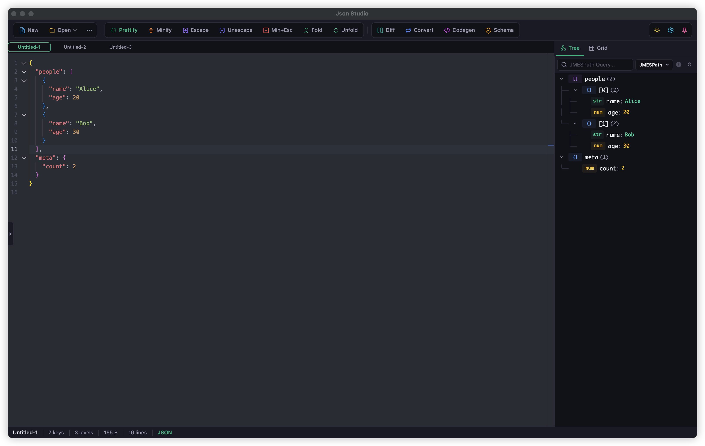
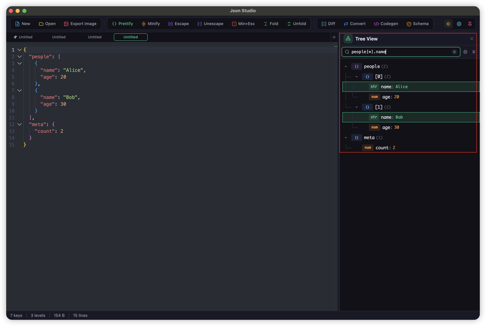
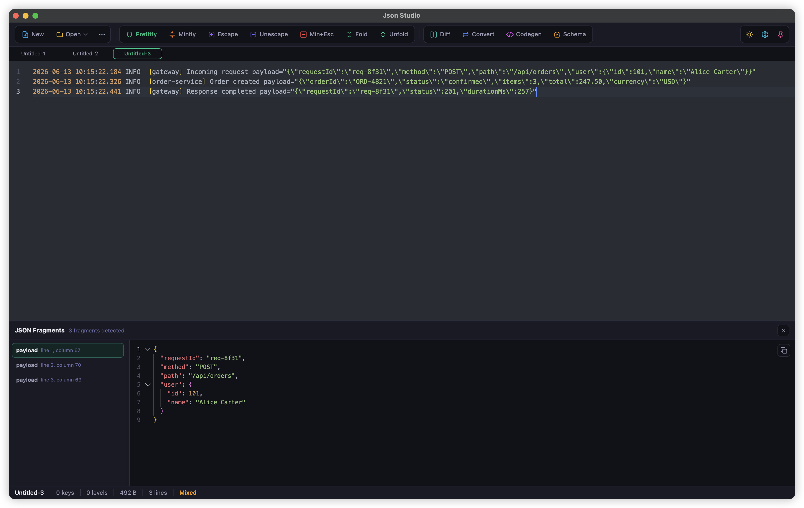
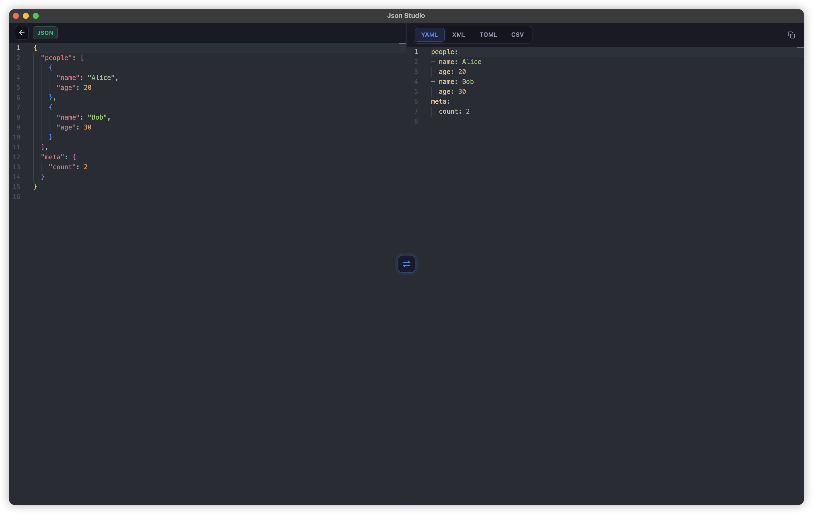
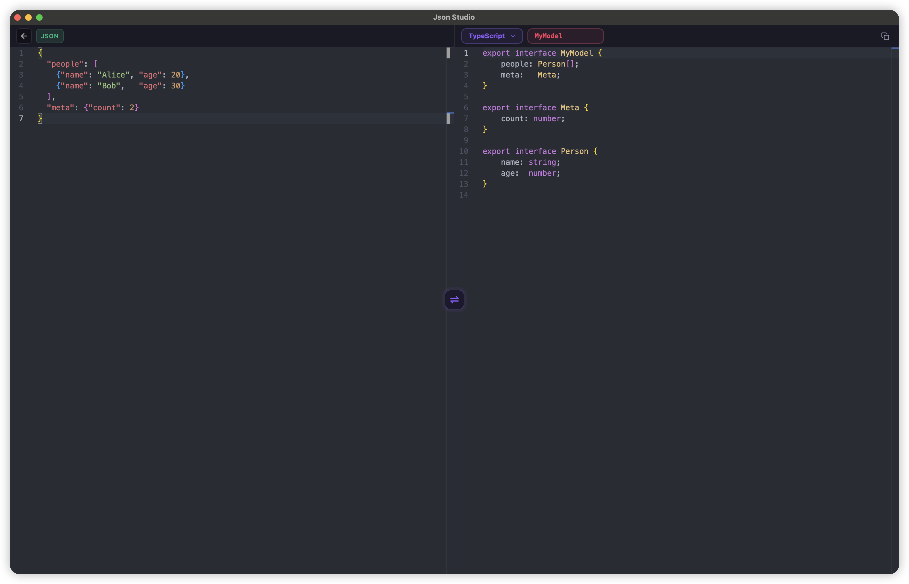
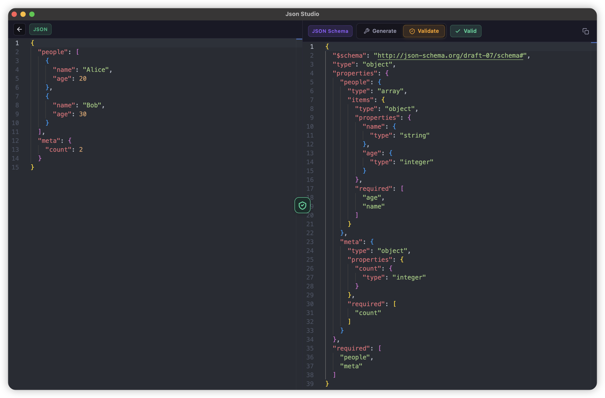
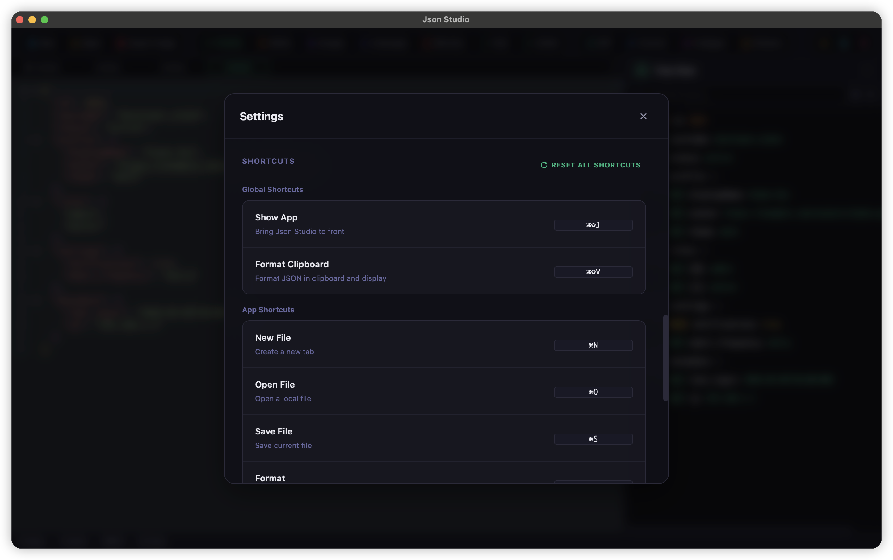
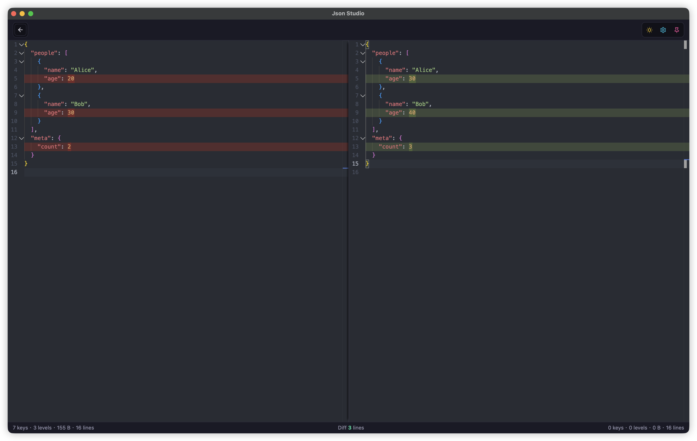

The Pro JSON Desktop App
JsonStudio
A fast, modern desktop JSON app built for daily development. The all-in-one workspace for every JSON task, designed to redefine your workflow efficiency.
$ brew install --cask sundegan/tap/json-studio
A fast, modern desktop JSON app built for daily development. The all-in-one workspace for every JSON task, designed to redefine your workflow efficiency.
$ brew install --cask sundegan/tap/json-studio
JsonStudio is shaped around the payloads developers actually handle: API responses, escaped strings, JSON5-like fragments, nested objects, and logs where text and JSON are mixed.
No network required, no browser tab juggling, no ads, and no upload risk. Your sensitive JSON stays on your machine while native shortcuts, always-on-top, and local file handling keep the workflow quick.
Handles strict JSON, JSON5-like input, escaped JSON strings, trailing commas, unquoted keys, repairable fragments, and paste auto-formatting.
Tree view, JMESPath/JSONPath query, real-time statistics, and side-by-side diff make large payloads easier to read and verify.
Multi-tabs, numbered Untitled documents, reused tabs for reopened files, unsaved prompts, optional auto-save, drag-and-drop, and file association.
Prettify, minify, escape, unescape, minify + escape, fold/unfold, Schema generation/validation, format conversion, and typed code generation.

Built for daily JSON work: prettify, view, query, log extraction, Diff, Converter, JSON Schema, Code Gen, and Minify/Escape.
Built on Monaco Editor (the engine of VS Code), delivering a top-tier JSON/JSON5 formatting and prettify experience.

Visualize complex JSON/JSON5 structures as an interactive tree. Navigate, search, and query with ease.

When logs, error stacks, or API debug text contain structured payloads, JsonStudio finds the useful fragments without replacing your original editor content.

Convert JSON to YAML, XML, TOML, and CSV without leaving the desktop workflow.

Generate type-safe models from JSON, or extract JSON back from supported code snippets.

Generate JSON Schema from any JSON data, or validate your data against an existing schema — all in a dedicated view.

Native desktop capabilities keep JSON work close to everyday development: open, save, watch, and reuse tabs with less friction.

A practical toolbox focused on JSON Diff, minify/escape, repair, and export.

Every detail is crafted for developer productivity.
One-click auto-repair of invalid JSON — fix missing quotes, trailing commas, and more.
Find JSON, JSON5-like, escaped JSON, and repairable fragments in logs and mixed text.
Automatically save modified file-backed tabs, with a prompt before closing unsaved work.
The editor, formatter, tree view, and paste normalization understand flexible JSON5 syntax.
Small install size and low memory footprint, powered by Tauri and Rust.
Launches in under a second. No loading screens, no waiting.
Available on macOS, Windows, and Linux with native look and feel.
Dracula, Nord, One Dark, Solarized, and more. Switch between light and dark with one click.
Export JSON as beautiful images with syntax highlighting for easy sharing, powered by Rust-native rendering.
Real-time display of key count, nesting depth, byte size, and line count.
Full Chinese and English interface with one-click language switching.
All data stays on your machine. No server, no upload, complete privacy.
See how JsonStudio compares to online JSON tools and other editors.
| Feature | Online Tools | JsonStudio |
|---|---|---|
| Offline / No Internet Required | ✗ | ✓ |
| Data Privacy (100% Local) | ✗ | ✓ |
| Large JSON Data Performance | ✗ | ✓ |
| Multi-tab Editing | ✗ | ✓ |
| Tree View & JMESPath / JSONPath Query | ✗ | ✓ |
| Log-like Text JSON Extraction | ✗ | ✓ |
| JSON5 Parsing and Formatting | ✗ | ✓ |
| Auto-Save and Reusable File Tabs | ✗ | ✓ |
| Ad-Free Experience | ✗ | ✓ |
| Global Shortcuts & Custom Keybindings | ✗ | ✓ |
| Image Export | ✗ | ✓ |
| Local File Operations | ✗ | ✓ |
| Custom Settings (Theme, Font, Spacing, Shortcuts...) | ✗ | ✓ |
| JSON Schema Generation & Validation | ✓ | ✓ |
| Code Generation | ✓ | ✓ |
| JSON Converter (YAML/XML/...) | ✓ | ✓ |
| JSON Diff | ✓ | ✓ |
Leveraging the best tools for performance, security, and developer experience.